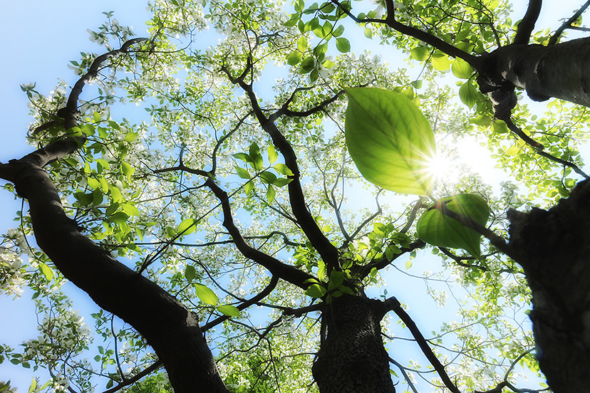
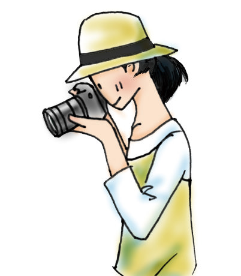

Photography Basic | Part 6
Position and Angle
The position and angle are two elements that greatly influence the outcome of your photos. Since they have such a significant impact, varying them ensures that you will be able to get a different effect in your photos. In the following, we go over 3 points each in relation to the position and the angle.

Position: The level where you hold the camera
Angle: The degree at which the camera faces the subject
Points-to-note
-You can change the composition of your photos based on the position and angle.
-The smaller the aperture (i.e. the larger the f-number), the larger the area in-focus (depth-of-field).
-Decide on a position before choosing an angle.
The position refers to the height at which the camera is held relative to the ground. Holding the camera at a normal position to your eye is known as ‘eye-level position’, holding it at a position higher than your eye is referred to ‘high position’, and holding the camera at a low level, such as when you are squatting, is known as ‘low position’.
The angle refers to the degree at which the camera points towards the subject. Holding the camera at a horizontal level to the subject is known as ‘eye-level angle’, holding the camera facing downwards is known as ‘high angle’, and holding it facing upwards is known as ‘low angle’.
When you are shooting, firstly, observe your subject thoroughly before deciding which position to shoot from. Next, think of an angle. Significantly varying your shooting position and angle gives you different compositions from the ones you may have had before. In order to bring out the most appealing qualities of the subject, you will need to approach it from different viewpoints and vary the position and angle of shooting.
Position
High position
Hold the camera at a high position by raising your arms above your eye level, or get into a higher position with the aid of a footstool or platform. This shooting position allows you to capture further into the background. Combining this with a high angle creates a bold perspective.
Eye-level position
This is a standard shooting position at a height where you look into the viewfinder while standing. Since it results in photos that simply capture what you can see, it gives the most realistic representation of what you are shooting. However, it can feel monotonous when all your pictures are taken from this position.
Low position
This is a position where you hold the camera at a height lower than your eye level. Since it captures a different view from what you usually see, it can result in impactful photos. Combining this with a low angle amplifies this effect.
Angle
High angle
This is an angle where you tilt the camera downwards to face the subject, which is also referred to as a bird’s eye view. As this captures the subject in its entirety, it results in a descriptive picture which clearly captures the surroundings as you see them. Since the ground tends to form the background in the picture, you may want to adjust your choice of background.
Eye-level angle
This is a standard shooting angle where you hold the camera to the same height as your eye level without tilting it. As you are shooting at the same eye level as the subject, which is the same level as normal human vision, the result appears natural and familiar, and has a sense of stability.
Low angle
This is an angle where you point the camera upwards at the subject. When shooting a tall or high subject from a low angle, it creates a sense of depth and intimidation, which allows you to depict the presence and intensity of the subject. Since the sky usually forms the background, it is easy to adjust the photo composition.